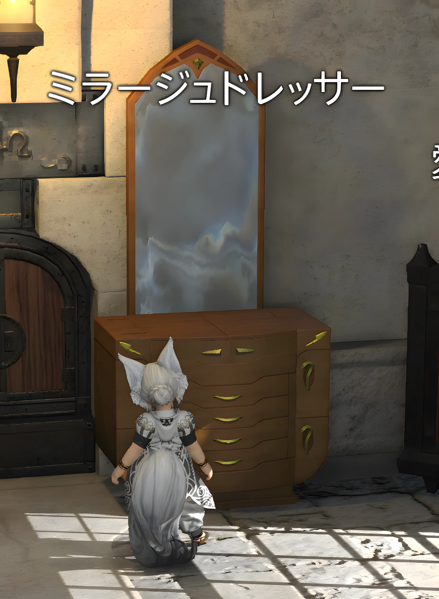

装備の見た目変更機能（ミラプリ）
装備の性能を変えずに、見た目だけを別の装備へ変更する機能です。FFXIVでは一般的に「ミラプリ」と呼ばれています。
いずれかのクラス・ジョブがLv15になると、西ザナラーンのベスパーベイにいるスウィルゲイム（X:12.6 Y:14.3）からサブクエスト「華やかなる投影世界」を受注できます。
このクエストをクリアすると、武具投影とミラージュプレートが利用できるようになり、宿屋などにあるミラージュドレッサーを使った見た目管理も行えるようになります。

「華やかなる投影世界」で使えるようになること
- 武具投影：装備の性能を変えず、見た目だけを別装備へ変更する
- ミラージュドレッサー：対応装備を幻影として保管し、見た目用に利用する
- ミラージュプレート：複数部位の見た目をコーディネートとしてまとめておく
この3つを覚えておけば、まずミラプリを楽しむための基本は十分です。

ほかの見た目・キャラクター機能は別の開放です
染色、美容師、エモート、ミニオン、マウント、グループポーズ、ポートレート、アドベンチャープレートなどは、「華やかなる投影世界」をクリアしただけで一括開放されるものではありません。
たとえば染色は、同じスウィルゲイムから受注できるLv15サブクエスト「鮮やかなる染色世界」で開放されます。その他はストーリー進行や個別のクエスト、アイテムの入手など、それぞれ利用条件が異なります。